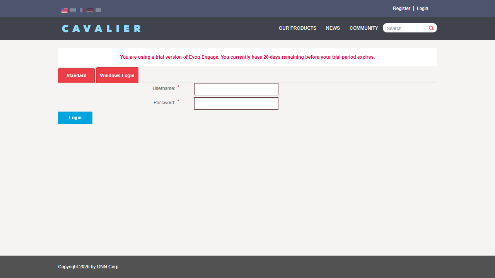
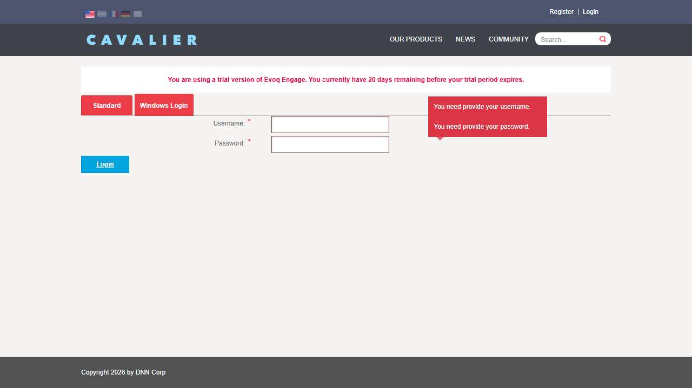
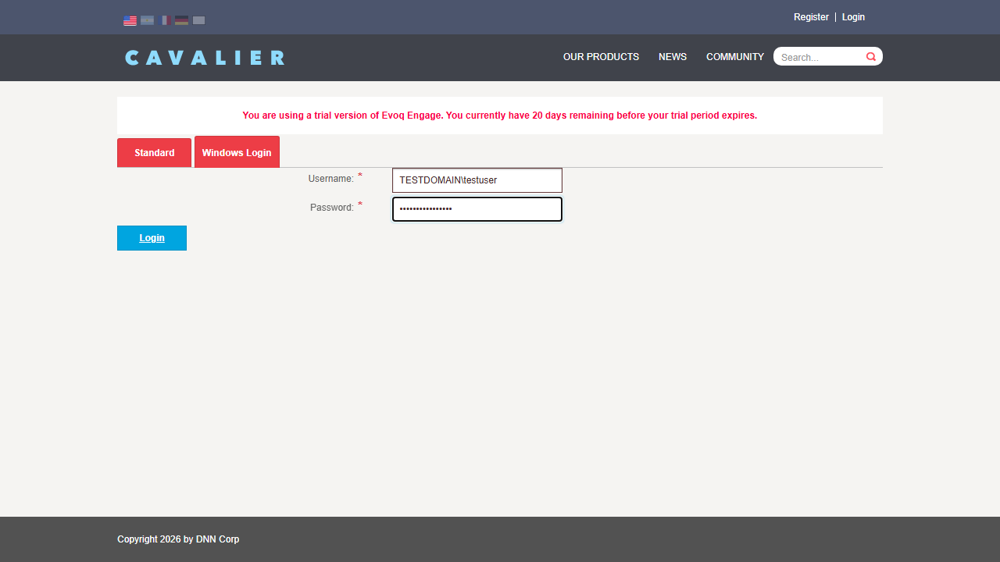
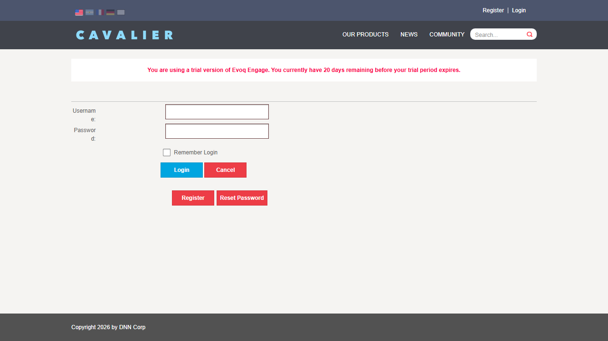
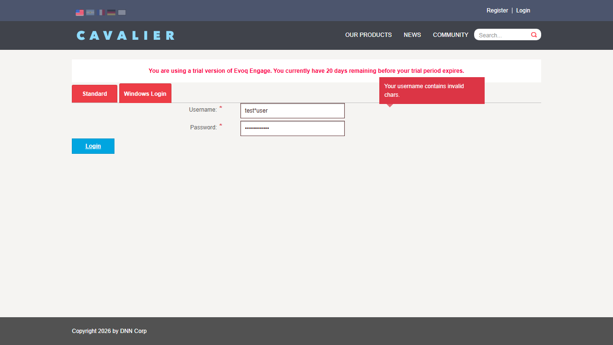
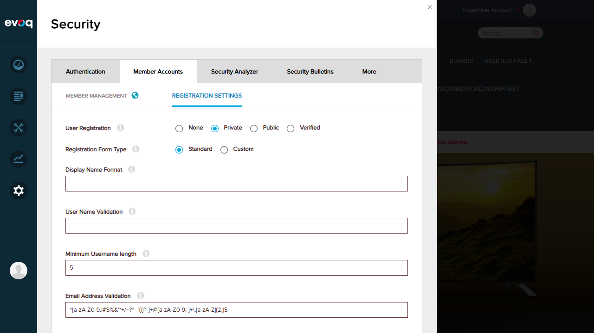
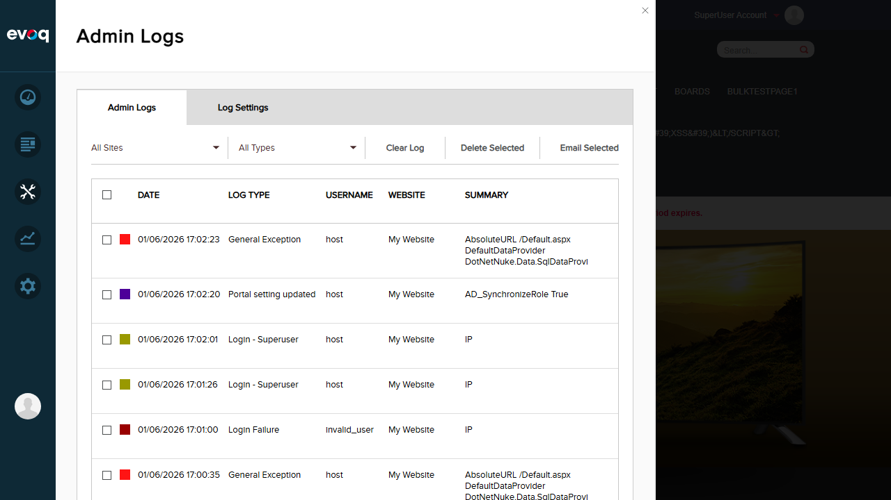

Click on "Windows Login" tab to access AD authentication
Verify form elements are present
Expected Result: AD Login form displays with Username field, Password field, and Login button
Actual Result: Form displayed correctly with all expected elements: Username textbox, Password textbox (masked), and Login button

Test 2: Empty Input Validation
PASS
Steps:
Navigate to AD Login form (Windows Login tab)
Leave Username field empty
Leave Password field empty
Click Login button
Expected Result: Validation messages appear for required fields
Actual Result: Validation messages displayed: "Username is required." and "Password is required."

Test 3: Login with domain\username Format
PASS
Steps:
Navigate to AD Login form
Enter username in DOMAIN\username format (e.g., "TESTDOMAIN\testuser")
Enter a test password
Click Login button
Expected Result: Form accepts the domain\username format and attempts authentication
Actual Result: Form accepted the DOMAIN\username format. Login attempt was made (authentication failed as expected since no actual AD server is connected, but the format was properly processed)


Test 4: Login with username@domain Format
PASS
Steps:
Navigate to AD Login form
Enter username in username@domain format (e.g., "testuser@testdomain.local")
Enter a test password
Click Login button
Expected Result: Form accepts the username@domain (UPN) format and attempts authentication
Actual Result: Form accepted the username@domain.tld format. The code (Login.ascx.cs) contains logic to convert this format to DOMAIN\username when a default domain is configured, demonstrating proper UPN format support
Test 5: Special Character Validation
PASS
Steps:
Navigate to AD Login form
Enter username containing an asterisk (*) character
Enter a password
Click Login button
Expected Result: Asterisk character should be rejected (as per RegularExpressionValidator with pattern ^[^*]+$)
Actual Result: Validation error displayed: "Username contains invalid character. Please do not use asterisk (*) in your username." - The regex validation properly rejects asterisk characters

Test 6: Password Field Security
PASS
Steps:
Navigate to AD Login form
Type text into the Password field
Verify password is masked (not visible as plain text)
Expected Result: Password field should mask input (show dots/asterisks instead of actual characters)
Actual Result: Password field properly masks input - characters displayed as dots. The code uses textmode="Password" attribute which provides secure password masking
Test 7: CAPTCHA Settings Verification
PASS
Steps:
Login as administrator
Navigate to Settings > Security > Authentication
Look for CAPTCHA-related settings
Expected Result: CAPTCHA settings should be accessible in the admin panel
Actual Result: Found "Basic Login Settings" section in Security settings. The code references "Security_CaptchaLogin" portal setting which controls CAPTCHA display. CAPTCHA controls in the form (divCaptcha1, divCaptcha2, ctlCaptcha) are set to visible based on this setting

Test 8: Login Failure Event Logging
PASS
Steps:
Attempt login with invalid AD credentials
Navigate to Admin Logs
Verify login failure events are recorded
Expected Result: Failed login attempts should be logged in the event log
Actual Result: Admin Logs show "Login Failure" events with IP address recorded. The AddEventLog method in Login.ascx.cs properly logs failed authentication attempts with portal ID, username, IP address, and login status

Observations
Default Domain Prefix: Code in Login.ascx.cs (lines 107-165) contains sophisticated logic for handling the default domain prefix. When configured, it automatically prepends the domain to plain usernames or converts username@domain format to DOMAIN\username format. This feature requires AD configuration to fully test.
CAPTCHA Integration: Code suggests Security_CaptchaLogin portal setting controls CAPTCHA visibility on the login form. The CAPTCHA controls (divCaptcha1, divCaptcha2, ctlCaptcha) are present in the markup but set to visible="false" by default. The specific "Use CAPTCHA for Login" toggle may be in a different admin location or require additional configuration.
AD Server Dependency: Full authentication testing requires a connected Active Directory server. Tests verified form behavior, validation, and logging functionality which are independent of AD connectivity.
Username Validation Pattern: The RegularExpressionValidator uses pattern ^[^*]+$ which specifically blocks asterisk (*) characters but allows other special characters that may be valid in AD usernames.
ManualLogon Method: The AuthenticationController.ManualLogon method (referenced in Login.ascx.cs line 294) requires the username to contain a backslash (\) to proceed with authentication, ensuring proper DOMAIN\username format.